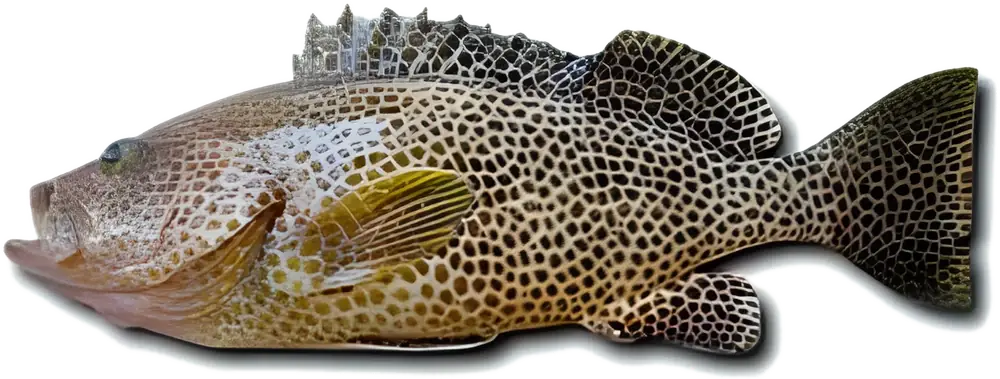
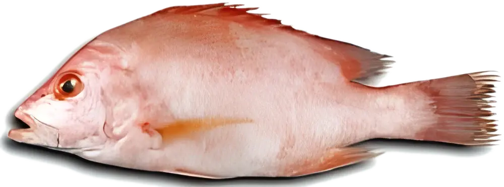
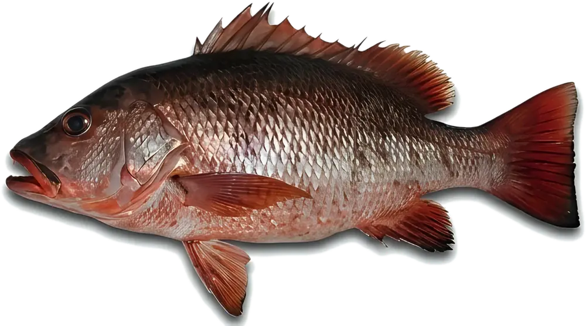
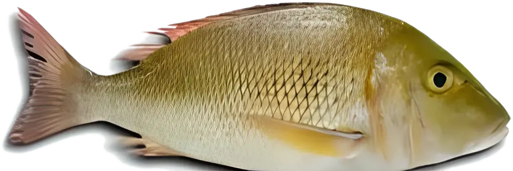
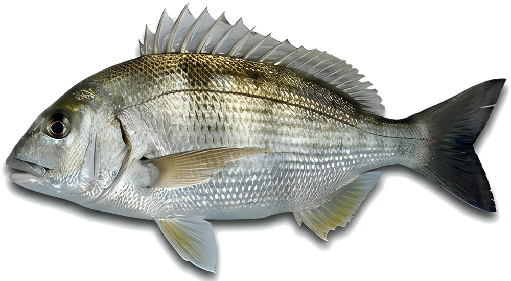
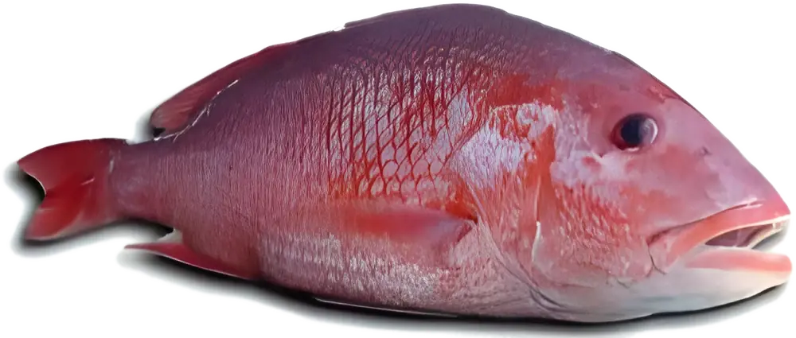

Local Species.
Local Knowledge.
We focus exclusively on native Gulf species — resilient, well-adapted, and ecologically appropriate.
Our core species:
Select a species to explore its biology, farming characteristics and fry availability.

In productionHamourOrange-spotted GrouperEpinephelus coioidesA high-value, slow-growing species prized in regional cuisine.Explore species
In productionHamraMalabar Red SnapperLutjanus malabaricusA hardy and fast-growing species ideal for sea cage culture.Explore species
In productionShiqraMangrove Red SnapperLutjanus argentimaculatusA hardy warm-water snapper with strong commercial acceptance in Middle Eastern markets.Explore species
Core speciesShaariSpangled EmperorLethrinus nebulosusA premium reef fish valued for its delicate flavour, strong market demand, and adaptability to warm-water aquaculture.Explore species
In productionSeabreamSobaity SeabreamSparidentex hasta · Sparus aurata and regional warm-water variantsOne of the most commonly farmed marine species in the region, with well-understood farming protocols.Explore species
Under evaluationUmm DraisRed snapperScientific name TBCA Gulf red snapper presented alongside our core species.Explore speciesBroodstock development
We’re advancing broodstock lines to improve climate resilience and enable year-round spawning, supporting stable, scalable supply.
- Broodstock management and spawning
- Larval development and live-feed systems
- Nursery and fry conditioning
Further development species: To be supplied by Gulf Aquaculture
At Gulf Aquaculture, we believe meaningful sustainability starts with knowing what thrives here — not just what sells. Our approach is rooted in science, shaped by local conditions, and designed to benefit both ecosystems and economies.
We don’t adapt species to our systems. We build systems around our species.
Deep knowledge.
Local advantage.
Our work begins with a profound understanding of native Gulf species — their biology, behaviour, and breeding cycles. Species like Hamour and Red Snapper are not only valuable to the market — they’re naturally suited to our environment.
This knowledge allows us to:
- Optimise feed for local conditions
- Breed fish with greater resilience to heat and salinity
- Support wild population recovery through responsible sourcing
- Avoid overengineering, reducing costs and environmental stress
Sustainability
through specificity
Rather than replicate global models, we’ve designed our hatchery and nursery systems to reflect what’s needed — and nothing more. This minimalist approach results in:
- Lower energy use
- Higher survival rates
- No antibiotic use
- Meaningful reductions in environmental impact